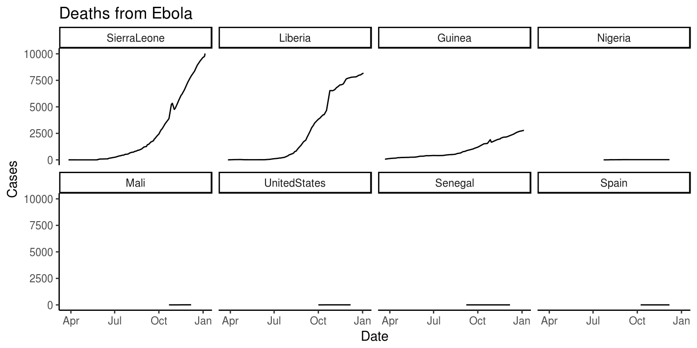
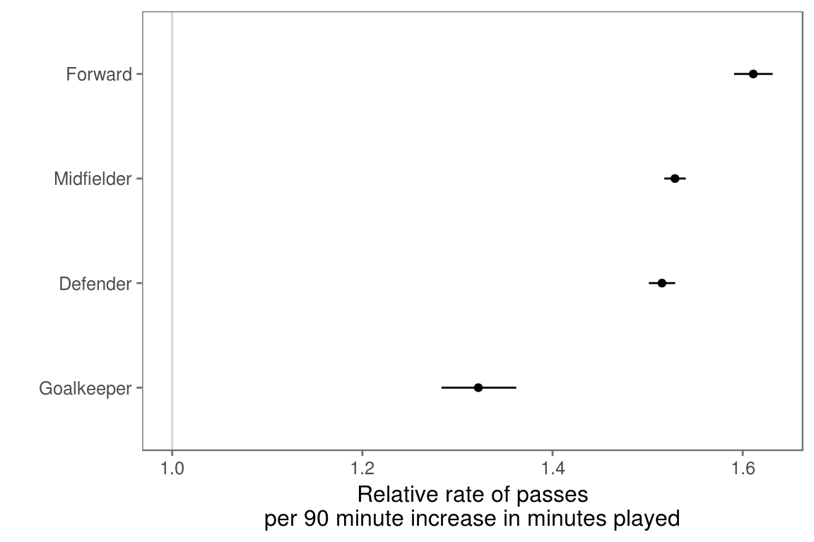
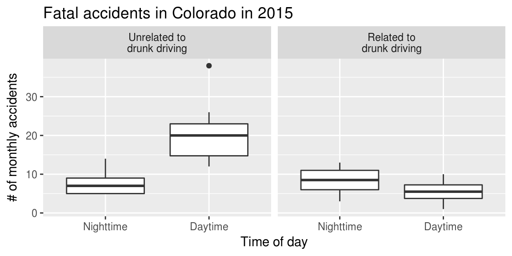

Chapter 7 Exploring data #2
Download a pdf of the lecture slides covering this topic.
7.1 Parentheses
If you put parentheses around an entire code statement, it will both run the code and print out the answer.
study_months <- c("Jan", "Feb", "Mar")
study_months## [1] "Jan" "Feb" "Mar"(study_months <- c("Jan", "Feb", "Mar"))## [1] "Jan" "Feb" "Mar"7.2 Loops
Loops allow you to “walk through” and repeat the same code for different values of an index. For each run of the loop, R is told that, for some index in some vector, do some code. For example, the following loop specifies: For i in 1:3, print(i).
for(i in c(1, 2, 3)){
print(i)
}## [1] 1
## [1] 2
## [1] 3Note that this code is equivalent to:
i <- 1
print(i)## [1] 1i <- 2
print(i)## [1] 2i <- 3
print(i)## [1] 3Often, the index will be set to a number for each cycle of the loop, and then the index will be used within the code to index vectors or dataframes:
study_months <- c("Jan", "Feb", "Mar")
for(i in c(1, 3)){
print(study_months[i])
}## [1] "Jan"
## [1] "Mar"Often, you want to set the index to sequential numbers (e.g., 1, 2, 3, 4). In this case, you can save time by using the : notation to create a vector of a sequence of numbers:
for(i in 1:3){
print(i)
}## [1] 1
## [1] 2
## [1] 3With this notation, sometimes it may be helpful to use the length function to set the largest index value for the loop as the length of a vector (or nrow for indexing a dataframe). For example:
study_months <- c("Jan", "Feb", "Mar")
for(i in 1:length(study_months)){
print(study_months[i])
}## [1] "Jan"
## [1] "Feb"
## [1] "Mar"Sometimes, you want to set the index for each cycle of the loop to something that is not a number. You can set the index to any class of vector.
Remember that a loop works by saying for some index in some vector, do some code. For example, you may want to run: for study_month in study_months, print(study_month):
study_months <- c("Jan", "Feb", "Mar")
for(study_month in study_months){
print(study_month)
}## [1] "Jan"
## [1] "Feb"
## [1] "Mar"Note that this is equivalent to:
study_month <- "Jan"
print(study_month)## [1] "Jan"study_month <- "Feb"
print(study_month)## [1] "Feb"study_month <- "Mar"
print(study_month)## [1] "Mar"What would this loop do?
vars <- c("Time", "Shots", "Passes", "Tackles", "Saves")
for(i in 1:length(vars)){
var_mean <- mean(worldcup[ , vars[i]])
print(var_mean)
}vars <- c("Time", "Shots", "Passes", "Tackles", "Saves")
for(i in 1:length(vars)){
var_mean <- mean(worldcup[ , vars[i]])
print(var_mean)
}## [1] 208.8639
## [1] 2.304202
## [1] 84.52101
## [1] 4.191597
## [1] 0.6672269What would this loop do?
vars <- c("Time", "Shots", "Passes", "Tackles", "Saves")
for(i in 1:length(vars)){
var_mean <- mean(worldcup[ , vars[i]])
var_mean <- round(var_mean, 1)
out <- paste0("mean of ", vars[i], ": ", var_mean)
print(out)
}To figure out, you can set i <- 1 and then walk through the loop:
i <- 1
(var_mean <- mean(worldcup[ , vars[i]]))## [1] 208.8639(var_mean <- round(var_mean, 1))## [1] 208.9(out <- paste0("mean of ", vars[i], ": ", var_mean))## [1] "mean of Time: 208.9"vars <- c("Time", "Shots", "Passes", "Tackles", "Saves")
for(i in 1:length(vars)){
var_mean <- mean(worldcup[ , vars[i]])
var_mean <- round(var_mean, 1)
out <- paste0("mean of ", vars[i], ": ", var_mean)
print(out)
}## [1] "mean of Time: 208.9"
## [1] "mean of Shots: 2.3"
## [1] "mean of Passes: 84.5"
## [1] "mean of Tackles: 4.2"
## [1] "mean of Saves: 0.7"Often, it’s convenient to create a dataset to fill up as you loop through:
vars <- c("Time", "Shots", "Passes", "Tackles", "Saves")
my_df <- data.frame(variable = vars, mean = NA)
for(i in 1:nrow(my_df)){
var_mean <- mean(worldcup[ , vars[i]])
my_df[i , "mean"] <- round(var_mean, 1)
}vars <- c("Time", "Shots", "Passes", "Tackles", "Saves")
(my_df <- data.frame(variable = vars, mean = NA))## variable mean
## 1 Time NA
## 2 Shots NA
## 3 Passes NA
## 4 Tackles NA
## 5 Saves NAi <- 1
(var_mean <- mean(worldcup[ , vars[i]]))## [1] 208.8639my_df[i , "mean"] <- round(var_mean, 1)
my_df## variable mean
## 1 Time 208.9
## 2 Shots NA
## 3 Passes NA
## 4 Tackles NA
## 5 Saves NAfor(i in 1:nrow(my_df)){
var_mean <- mean(worldcup[ , vars[i]])
my_df[i , "mean"] <- round(var_mean, 1)
}
my_df## variable mean
## 1 Time 208.9
## 2 Shots 2.3
## 3 Passes 84.5
## 4 Tackles 4.2
## 5 Saves 0.7Note: This is a pretty simplistic example. There are some easier ways to have done this:
worldcup %>%
summarize(Time = mean(Time), Passes = mean(Passes),
Shots = mean(Shots), Tackles = mean(Tackles),
Saves = mean(Saves)) %>%
gather(key = var, value = mean) %>%
mutate(mean = round(mean, 1))## var mean
## 1 Time 208.9
## 2 Passes 84.5
## 3 Shots 2.3
## 4 Tackles 4.2
## 5 Saves 0.7Another way to have done this is with apply:
means <- apply(worldcup[ , vars], 2, mean)
(means <- round(means, 1))## Time Shots Passes Tackles Saves
## 208.9 2.3 84.5 4.2 0.7However, you can use this same looping process for much more complex tasks that you can’t do as easily with apply or dplyr tools.
Loops can be very useful for more complex repeated tasks. For example:

Creating this graph requires that you:
- Create a subset limited to each of the four positions
- Fit a Poisson regression of Passes on Time within each subset
- Pull the regression coefficient and standard error from each model
- Use those values to calculate 95% confidence intervals
- Convert everything from log relative rate to relative rate
- Plot everything
Create a vector with the names of all positions. Create an empty dataframe to store regression results:
(positions <- unique(worldcup$Position))## [1] Midfielder Defender Forward Goalkeeper
## Levels: Defender Forward Goalkeeper Midfielder(pos_est <- data.frame(position = positions,
est = NA, se = NA))## position est se
## 1 Midfielder NA NA
## 2 Defender NA NA
## 3 Forward NA NA
## 4 Goalkeeper NA NALoop through and fit a Poisson regression model for each subset of data. Save regression coefficients in the empty dataframe:
for(i in 1:nrow(pos_est)){
pos_df <- worldcup %>%
filter(Position == positions[i])
pos_mod <- glm(Passes ~ Time,
data = pos_df,
family = poisson(link = "log"))
pos_coefs <- summary(pos_mod)$coefficients[2, 1:2]
pos_est[i, c("est", "se")] <- pos_coefs
}
pos_est[1:2, ]## position est se
## 1 Midfielder 0.004716096 4.185925e-05
## 2 Defender 0.004616260 5.192736e-05Calculate 95% confidence intervals for log relative risk values:
pos_est <- pos_est %>%
mutate(lower_ci = est - 1.96 * se,
upper_ci = est + 1.96 * se)
pos_est %>%
select(position, est, lower_ci, upper_ci) ## position est lower_ci upper_ci
## 1 Midfielder 0.004716096 0.004634052 0.004798140
## 2 Defender 0.004616260 0.004514483 0.004718038
## 3 Forward 0.005299009 0.005158945 0.005439074
## 4 Goalkeeper 0.003101124 0.002770562 0.003431687Calculate relative risk per 90 minute increase in minutes played:
pos_est <- pos_est %>%
mutate(rr_est = exp(90 * est),
rr_low = exp(90 * lower_ci),
rr_high = exp(90 * upper_ci))
pos_est %>%
select(position, rr_est, rr_low, rr_high) ## position rr_est rr_low rr_high
## 1 Midfielder 1.528747 1.517501 1.540077
## 2 Defender 1.515073 1.501258 1.529015
## 3 Forward 1.611090 1.590908 1.631527
## 4 Goalkeeper 1.321941 1.283192 1.361861Re-level the position factor so the plot will be ordered from highest to lowest estimates:
pos_est <- arrange(pos_est, rr_est) %>%
mutate(position = factor(position,
levels = position))
pos_est %>% select(position, est)## position est
## 1 Goalkeeper 0.003101124
## 2 Defender 0.004616260
## 3 Midfielder 0.004716096
## 4 Forward 0.005299009Create the plot:
ggplot(pos_est, aes(x = rr_low, y = position)) +
geom_segment(aes(xend = rr_high, yend = position)) +
geom_point(aes(x = rr_est, y = position)) +
theme_few() +
ylab("") +
scale_x_continuous(paste("Relative rate of passes\nper",
"90 minute increase in minutes played"),
limits = c(1.0, max(pos_est$rr_high))) +
geom_vline(aes(xintercept = 1), color = "lightgray")
7.3 Other control structures
7.3.1 if / else loops
There are other control structures you can use in your R code. Two that you will commonly use within R functions are if and ifelse statements.
An if statement tells R that, if a certain condition is true, do run some code. For example, if you wanted to print out only odd numbers between 1 and 5, one way to do that is with an if statement: (Note: the %% operator in R returns the remainder of the first value (i) divided by the second value (2).)
for(i in 1:5){
if(i %% 2 == 1){
print(i)
}
}## [1] 1
## [1] 3
## [1] 5The if statement runs some code if a condition is true, but does nothing if it is false. If you’d like different code to run depending on whether the condition is true or false, you can us an if / else or an if / else if / else statement.
for(i in 1:5){
if(i %% 2 == 1){
print(i)
} else {
print(paste(i, "is even"))
}
}## [1] 1
## [1] "2 is even"
## [1] 3
## [1] "4 is even"
## [1] 5What would this code do?
for(i in 1:100){
if(i %% 3 == 0 & i %% 5 == 0){
print("FizzBuzz")
} else if(i %% 3 == 0){
print("Fizz")
} else if(i %% 5 == 0){
print("Buzz")
} else {
print(i)
}
}If / else statements are extremely useful in functions.
In R, the if statement evaluates everything in the parentheses and, if that evaluates to TRUE, runs everything in the braces. This means that you can trigger code in an if statement with a single-value logical vector:
weekend <- TRUE
if(weekend){
print("It's the weekend!")
}## [1] "It's the weekend!"This functionality can be useful with parameters you choose to include when writing your own functions (e.g., print = TRUE).
7.3.2 Some other control structures
The control structures you are most likely to use in data analysis with R are “for” loops and “if / else” statements. However, there are a few other control structures you may occasionally find useful:
nextbreakwhile
You can use the next structure to skip to the next round of a loop when a certain condition is met. For example, we could have used this code to print out odd numbers between 1 and 5:
for(i in 1:5){
if(i %% 2 == 0){
next
}
print(i)
}## [1] 1
## [1] 3
## [1] 5You can use break to break out of a loop if a certain condition is met. For example, the final code will break out of the loop once i is over 3, so it will only print the numbers 1 through 3:
for(i in 1:5){
if(i > 3){
break
}
print(i)
}## [1] 1
## [1] 2
## [1] 3my_sum <- 1
while(my_sum < 10){
my_sum <- my_sum * 2
print(my_sum)
}## [1] 2
## [1] 4
## [1] 8
## [1] 167.4 Functions
As you move to larger projects, you will find yourself using the same code a lot.
Examples include:
- Reading in data from a specific type of equipment (air pollution monitor, accelerometer)
- Running a specific type of analysis
- Creating a specific type of plot or map
If you find yourself cutting and pasting a lot, convert the code to a function.
Advantages of writing functions include:
- Coding is more efficient
- Easier to change your code (if you’ve cut and paste code and you want to change something, you have to change it everywhere - this is an easy way to accidentally create bugs in your code)
- Easier to share code with others
You can name a function anything you want (although try to avoid names of preexisting-existing functions). You then define any inputs (arguments; separate multiple arguments with commas) and put the code to run in braces:
## Note: this code will not run
[function name] <- function([any arguments]){
[code to run]
}Here is an example of a very basic function. This function takes a number as input and adds 1 to that number.
add_one <- function(number){
out <- number + 1
return(out)
}
add_one(number = 3)## [1] 4add_one(number = -1)## [1] 0- Functions can input any type of R object (for example, vectors, data frames, even other functions and ggplot objects)
- Similarly, functions can output any type of R object
- When defining a function, you can set default values for some of the parameters
- You can explicitly specify the value to return from the function
- There are ways to check for errors in the arguments a user inputs to the function
For example, the following function inputs a data frame (datafr) and a one-element vector (child_id) and returns only rows in the data frame where it’s id column matches child_id. It includes a default value for datafr, but not for child_id.
subset_nepali <- function(datafr = nepali, child_id){
datafr <- datafr %>%
filter(id == child_id)
return(datafr)
}If an argument is not given for a parameter with a default, the function will run using the default value for that parameter. For example:
subset_nepali(child_id = "120011")## id sex wt ht mage lit died alive age
## 1 120011 Male 12.8 91.2 35 0 2 5 41
## 2 120011 Male 12.8 93.9 35 0 2 5 45
## 3 120011 Male 13.1 95.2 35 0 2 5 49
## 4 120011 Male 13.8 96.9 35 0 2 5 53
## 5 120011 Male NA NA 35 0 2 5 57If an argument is not given for a parameter without a default, the function call will result in an error. For example:
subset_nepali(datafr = nepali)## Error in eval(expr, envir, enclos): argument 2 is emptyBy default, the function will return the last defined object, although the choice of using return can affect printing behavior when you run the function. For example, I could have written the subset_nepali function like this:
subset_nepali <- function(datafr = nepali, child_id){
datafr <- datafr %>%
filter(id == child_id)
}In this case, the output will not automatically print out when you call the function without assigning it to an R object:
subset_nepali(child_id = "120011")However, the output can be assigned to an R object in the same way as when the function was defined without return:
first_childs_data <- subset_nepali(child_id = "120011")
first_childs_data## id sex wt ht mage lit died alive age
## 1 120011 Male 12.8 91.2 35 0 2 5 41
## 2 120011 Male 12.8 93.9 35 0 2 5 45
## 3 120011 Male 13.1 95.2 35 0 2 5 49
## 4 120011 Male 13.8 96.9 35 0 2 5 53
## 5 120011 Male NA NA 35 0 2 5 57The return function can also be used to return an object other than the last defined object (although doesn’t tend to be something you need to do very often). For example, if you did not use return in the following code, it will output “Test output”:
subset_nepali <- function(datafr = nepali, child_id){
datafr <- datafr %>%
filter(id == child_id)
a <- "Test output"
}
(subset_nepali(child_id = "120011"))## [1] "Test output"Conversely, you can use return to output datafr, even though it’s not the last object defined:
subset_nepali <- function(datafr = nepali, child_id){
datafr <- datafr %>%
filter(id == child_id)
a <- "Test output"
return(datafr)
}
subset_nepali(child_id = "120011")## id sex wt ht mage lit died alive age
## 1 120011 Male 12.8 91.2 35 0 2 5 41
## 2 120011 Male 12.8 93.9 35 0 2 5 45
## 3 120011 Male 13.1 95.2 35 0 2 5 49
## 4 120011 Male 13.8 96.9 35 0 2 5 53
## 5 120011 Male NA NA 35 0 2 5 57You can use stop to stop execution of the function and give the user an error message. For example, the subset_nepali function will fail if the user inputs a data frame that does not have a column named “id”:
subset_nepali(datafr = data.frame(wt = rnorm(10)),
child_id = "12011") Error: comparison (1) is possible only for
atomic and list types You can rewrite the function to stop if the input datafr does not have a column named “id”:
subset_nepali <- function(datafr = nepali, child_id){
if(!("id" %in% colnames(datafr))){
stop("`datafr` must include a column named `id`")
}
datafr <- datafr %>%
filter(id == child_id)
return(datafr)
}
subset_nepali(datafr = data.frame(wt = rnorm(10)),
child_id = "12011")Error in subset_nepali(datafr = data.frame(wt = rnorm(10)),
child_id = "12011") :
`datafr` must include a column named `id`The stop function is particularly important if the function would keep running with the wrong input, but would result in the wrong output.
You can also output warnings and messages using the functions warning and message.
7.5 Regular expressions
For these examples, we’ll use some data on passengers of the Titanic. You can load this data using:
# install.packages("titanic")
library(titanic)
data("titanic_train")We will be using the stringr package:
library(stringr)This data includes a column called “Name” with passenger names. This column is somewhat messy and includes several elements that we might want to separate (last name, first name, title). Here are the first few values of “Name”:
titanic_train %>% select(Name) %>% slice(1:3)## Name
## 1 Braund, Mr. Owen Harris
## 2 Cumings, Mrs. John Bradley (Florence Briggs Thayer)
## 3 Heikkinen, Miss. LainaWe’ve already done some things to manipulate strings. For example, if we wanted to separate “Name” into last name and first name (including title), we could actually do that with the separate function:
titanic_train %>%
select(Name) %>%
slice(1:3) %>%
separate(Name, c("last_name", "first_name"), sep = ", ")## last_name first_name
## 1 Braund Mr. Owen Harris
## 2 Cumings Mrs. John Bradley (Florence Briggs Thayer)
## 3 Heikkinen Miss. LainaNotice that separate is looking for a regular pattern (“,”) and then doing something based on the location of that pattern in each string (splitting the string).
There are a variety of functions in R that can perform manipulations based on finding regular patterns in character strings.
The str_detect function will look through each element of a character vector for a designated pattern. If the pattern is there, it will return TRUE, and otherwise FALSE. The convention is:
## Generic code
str_detect(string = [vector you want to check],
pattern = [pattern you want to check for])For example, to create a logical vector specifying which of the Titanic passenger names include “Mrs.”, you can call:
mrs <- str_detect(titanic_train$Name, "Mrs.")
head(mrs)## [1] FALSE TRUE FALSE TRUE FALSE FALSEThe result is a logical vector, so str_detect can be used in filter to subset data to only rows where the passenger’s name includes “Mrs.”:
titanic_train %>%
filter(str_detect(Name, "Mrs.")) %>%
select(Name) %>%
slice(1:3)## Name
## 1 Cumings, Mrs. John Bradley (Florence Briggs Thayer)
## 2 Futrelle, Mrs. Jacques Heath (Lily May Peel)
## 3 Johnson, Mrs. Oscar W (Elisabeth Vilhelmina Berg)There is an older, base R function called grepl that does something very similar (although note that the order of the arguments is reversed).
titanic_train %>%
filter(grepl("Mrs.", Name)) %>%
select(Name) %>%
slice(1:3)## Name
## 1 Cumings, Mrs. John Bradley (Florence Briggs Thayer)
## 2 Futrelle, Mrs. Jacques Heath (Lily May Peel)
## 3 Johnson, Mrs. Oscar W (Elisabeth Vilhelmina Berg)The str_extract function can be used to extract a string (if it exists) from each value in a character vector. It follows similar conventions to str_detect:
## Generic code
str_extract(string = [vector you want to check],
pattern = [pattern you want to check for])For example, you might want to extract “Mrs.” if it exists in a passenger’s name:
titanic_train %>%
mutate(mrs = str_extract(Name, "Mrs.")) %>%
select(Name, mrs) %>%
slice(1:3)## Name mrs
## 1 Braund, Mr. Owen Harris <NA>
## 2 Cumings, Mrs. John Bradley (Florence Briggs Thayer) Mrs.
## 3 Heikkinen, Miss. Laina <NA>Notice that now we’re creating a new column (mrs) that either has “Mrs.” (if there’s a match) or is missing (NA) if there’s not a match.
For this first example, we were looking for an exact string (“Mrs”). However, you can use patterns that match a particular pattern, but not an exact string. For example, we could expand the regular expression to find “Mr.” or “Mrs.”:
titanic_train %>%
mutate(title = str_extract(Name, "Mr\\.|Mrs\\.")) %>%
select(Name, title) %>%
slice(1:3)## Name title
## 1 Braund, Mr. Owen Harris Mr.
## 2 Cumings, Mrs. John Bradley (Florence Briggs Thayer) Mrs.
## 3 Heikkinen, Miss. Laina <NA>Note that this pattern uses a special operator (|) to find one pattern or another. Double backslashes (\\) escape the special character “.”.
As a note, in regular expressions, all of the following characters are special characters that need to be escaped with backslashes if you want to use them literally:
. * + ^ ? $ \ | ( ) [ ] { }Notice that “Mr.” and “Mrs.” both start with “Mr”, end with “.”, and may or may not have an “s” in between.
titanic_train %>%
mutate(title = str_extract(Name, "Mr(s)*\\.")) %>%
select(Name, title) %>%
slice(1:3)## Name title
## 1 Braund, Mr. Owen Harris Mr.
## 2 Cumings, Mrs. John Bradley (Florence Briggs Thayer) Mrs.
## 3 Heikkinen, Miss. Laina <NA>This pattern uses (s)* to match zero or more “s”s at this spot in the pattern.
In the previous code, we found “Mr.” and “Mrs.”, but missed “Miss.”. We could tweak the pattern again to try to capture that, as well. For all three, we have the pattern that it starts with “M”, has some lowercase letters, and then ends with “.”.
titanic_train %>%
mutate(title = str_extract(Name, "M[a-z]+\\.")) %>%
select(Name, title) %>%
slice(1:3)## Name title
## 1 Braund, Mr. Owen Harris Mr.
## 2 Cumings, Mrs. John Bradley (Florence Briggs Thayer) Mrs.
## 3 Heikkinen, Miss. Laina Miss.The last pattern used [a-z]+ to match one or more lowercase letters. The [a-z]is a character class.
You can also match digits ([0-9]), uppercase letters ([A-Z]), just some letters ([aeiou]), etc.
You can negate a character class by starting it with ^. For example, [^0-9] will match anything that isn’t a digit.
Sometimes, you want to match a pattern, but then only subset a part of it. For example, each passenger seems to have a title (“Mr.”, “Mrs.”, etc.) that comes after “,” and before “.”. We can use this pattern to find the title, but then we get some extra stuff with the match:
titanic_train %>%
mutate(title = str_extract(Name, ",\\s[A-Za-z]*\\.\\s")) %>%
select(title) %>%
slice(1:3)## title
## 1 , Mr.
## 2 , Mrs.
## 3 , Miss.As a note, in this pattern, \\s is used to match a space.
We are getting things like “, Mr.”, when we really want “Mr”. We can use the str_match function to do this. We group what we want to extract from the pattern in parentheses, and then the function returns a matrix. The first column is the full pattern match, and each following column gives just what matches within the groups.
head(str_match(titanic_train$Name,
pattern = ",\\s([A-Za-z]*)\\.\\s"))## [,1] [,2]
## [1,] ", Mr. " "Mr"
## [2,] ", Mrs. " "Mrs"
## [3,] ", Miss. " "Miss"
## [4,] ", Mrs. " "Mrs"
## [5,] ", Mr. " "Mr"
## [6,] ", Mr. " "Mr"To get just the title, then, we can run:
titanic_train %>%
mutate(title =
str_match(Name, ",\\s([A-Za-z]*)\\.\\s")[ , 2]) %>%
select(Name, title) %>%
slice(1:3)## Name title
## 1 Braund, Mr. Owen Harris Mr
## 2 Cumings, Mrs. John Bradley (Florence Briggs Thayer) Mrs
## 3 Heikkinen, Miss. Laina MissThe [ , 2] pulls out just the second column from the matrix returned by str_match.
Here are some of the most common titles:
titanic_train %>%
mutate(title =
str_match(Name, ",\\s([A-Za-z]*)\\.\\s")[ , 2]) %>%
group_by(title) %>% summarize(n = n()) %>%
arrange(desc(n)) %>% slice(1:5)## # A tibble: 5 × 2
## title n
## <chr> <int>
## 1 Mr 517
## 2 Miss 182
## 3 Mrs 125
## 4 Master 40
## 5 Dr 7Here are a few other examples of regular expressions in action with this dataset.
Get just names that start with (“^”) the letter “A”:
titanic_train %>%
filter(str_detect(Name, "^A")) %>%
select(Name) %>%
slice(1:3)## Name
## 1 Allen, Mr. William Henry
## 2 Andersson, Mr. Anders Johan
## 3 Asplund, Mrs. Carl Oscar (Selma Augusta Emilia Johansson)Get names with “II” or “III” ({2,} says to match at least two times):
titanic_train %>%
filter(str_detect(Name, "I{2,}")) %>%
select(Name) %>%
slice(1:3)## Name
## 1 Carter, Master. William Thornton II
## 2 Roebling, Mr. Washington Augustus IIGet names with “Andersen” or “Anderson” (alternatives in square brackets):
titanic_train %>%
filter(str_detect(Name, "Anders[eo]n")) %>%
select(Name)## Name
## 1 Andersen-Jensen, Miss. Carla Christine Nielsine
## 2 Anderson, Mr. Harry
## 3 Walker, Mr. William Anderson
## 4 Olsvigen, Mr. Thor Anderson
## 5 Soholt, Mr. Peter Andreas Lauritz AndersenGet names that start with (“^” outside of brackets) the letters “A” and “B”:
titanic_train %>%
filter(str_detect(Name, "^[AB]")) %>%
select(Name) %>%
slice(1:3)## Name
## 1 Braund, Mr. Owen Harris
## 2 Allen, Mr. William Henry
## 3 Bonnell, Miss. ElizabethGet names that end with (“$”) the letter “b” (either lowercase or uppercase):
titanic_train %>%
filter(str_detect(Name, "[bB]$")) %>%
select(Name) ## Name
## 1 Emir, Mr. Farred Chehab
## 2 Goldschmidt, Mr. George B
## 3 Cook, Mr. Jacob
## 4 Pasic, Mr. JakobSome useful regular expression operators include:
| Operator | Meaning |
|---|---|
| . | Any character |
| * | Match 0 or more times (greedy) |
| *? | Match 0 or more times (non-greedy) |
| + | Match 1 or more times (greedy) |
| +? | Match 1 or more times (non-greedy) |
| ^ | Starts with (in brackets, negates) |
| $ | Ends with |
| […] | Character classes |
For more on these patterns, see:
- Help file for the
stringi-search-regexfunction in thestringipackage (which should install when you installstringr) - Introduction to stringr by Hadley Wickham
- Handling and Processing Strings in R by Gaston Sanchez (seven chapter ebook)
- http://gskinner.com/RegExr and http://www.txt2re.com: Interactive tools for helping you build regular expression pattern strings
7.6 In-course exercise
7.6.1 Exploring Fatality Analysis Reporting System (FARS) data
- Visit http://metrocosm.com/10-years-of-traffic-accidents-mapped.html and explore the interactive visualization created by Max Galka using this public dataset on US fatal motor vehicle accidents.
- Go to FARS web page to find and download the data for this week’s exercise. We want to get the raw data on fatal accidents. Navigate this page to figure out how you can get this raw data for the whole county for 2015. Download the 2015 data to your computer. What is the structure of how this data is saved (e.g., directory structure, file structure)?
- On the FARS web page, find the documentation describing this raw data. Look through both this documentation and the raw files you downloaded to figure out what information is included in the data.
- Read the
accident.csvfile for 2015 into R (this is one of the files you’ll get if you download the raw data for 2015). Use the documentation to figure out what each column represents. - Discuss what steps you would need to take to create the following plot. To start, don’t write any code, just develop a plan. Talk about what the dataset should look like right before you create the plot and what functions you could use to get the data from its current format to that format. (Hint: Functions from the
lubridatepackage will be very helpful, includingydayandwday). - Discuss which of the variables in this dataset could be used to merge the dataset with other appropriate data, either other datasets in the FARS raw data, or outside datasets.
- Try to write the code to create the plot below. This will include some code for cleaning the data and some code for plotting. There is an example answer below, but I’d like you to try to figure it out yourselves first.

7.6.1.1 Example R code
Here is example code for the section above:
library(tidyverse)
library(lubridate)
library(ggthemes)
accident <- read_csv("data/accident.csv") %>%
select(DAY:MINUTE) %>%
select(-DAY_WEEK) %>%
unite(date, DAY:MINUTE, sep = "-", remove = FALSE) %>%
mutate(date = dmy_hm(date),
yday = yday(date),
weekday = wday(date, label = TRUE, abbr = FALSE),
weekend = weekday %in% c("Saturday", "Sunday"))
accident %>%
filter(!is.na(yday)) %>%
group_by(yday) %>%
summarize(accidents = n(),
weekend = first(weekend)) %>%
ggplot(aes(x = yday, y = accidents, color = weekend)) +
geom_point(alpha = 0.5) +
xlab("Day of the year in 2015") +
ylab("# of fatal accidents") +
theme_few() +
geom_smooth(se = FALSE)
7.6.2 Using a loop to create state-specific plots
Next, you will write a loop to write a four-page pdf file with state-specific plots for the states of Colorado, Texas, California, and New York.
- The data has a column called
STATE, but it gives state as a one- or two-digit code, rather than by name. These codes are the state Federal Information Processing Standard (FIPS) codes. A dataset with state names and FIPS codes is available at http://www2.census.gov/geo/docs/reference/state.txt. Read that data into an R object calledstate_fipsand clean it so the first few lines look like this:
## # A tibble: 5 × 2
## state state_name
## <int> <chr>
## 1 1 Alabama
## 2 2 Alaska
## 3 4 Arizona
## 4 5 Arkansas
## 5 6 California- Read the 2015 FARS data into an R object named
accident. Use all the date and time information to create a column nameddatewith the date and time of the accident. Include information on whether the accident was related to drunk driving (FALSE if there were 0 drunk drivers, TRUE if there were one or more), and create columns that gives whether the accident was during the day (7 AM to 7 PM) or not as well as the month of the accident (for this last column, you can either retain it from the original data or recalculate it based on the newdatevariable). Filter out any values where the date-time does not render (i.e.,dateis a missing value). The first few rows of the cleaned dataframe should look like this:
## # A tibble: 5 × 5
## state date drunk_dr daytime month
## <int> <dttm> <lgl> <lgl> <dbl>
## 1 1 2015-01-01 02:40:00 TRUE FALSE 1
## 2 1 2015-01-01 22:13:00 FALSE FALSE 1
## 3 1 2015-01-01 01:25:00 TRUE FALSE 1
## 4 1 2015-01-04 00:57:00 TRUE FALSE 1
## 5 1 2015-01-07 07:09:00 FALSE TRUE 1- Join the information from
state_fipsinto theaccidentdataframe. There may be a few locations in thestate_fipsdataframe that are not included in theaccidentdataframe (e.g., Virgin Islands), so when you join keep all observations inaccidentbut only the observations instate_fipsthat match at least one row ofaccident. The first few rows of the joined dataset should look like this:
## # A tibble: 5 × 6
## state date drunk_dr daytime month state_name
## <int> <dttm> <lgl> <lgl> <dbl> <chr>
## 1 1 2015-01-01 02:40:00 TRUE FALSE 1 Alabama
## 2 1 2015-01-01 22:13:00 FALSE FALSE 1 Alabama
## 3 1 2015-01-01 01:25:00 TRUE FALSE 1 Alabama
## 4 1 2015-01-04 00:57:00 TRUE FALSE 1 Alabama
## 5 1 2015-01-07 07:09:00 FALSE TRUE 1 Alabama- Write the code to create boxplots for Colorado of the distribution of total accidents within each month. Create separate boxplots for daytime and nighttime accidents, and facet by whether the accident was related to drunk driving. The plot should look like the plot below.

- Write a loop to create a plot like the one you just made for Colorado for four different states – Colorado, Texas, California, and New York. The code should write the plots out to a pdf, with one plot per page of the pdf. (Hint: To get a loop to print out a plot created with ggplot, you must explicitly print the plot object. For example, you could assign the plot to
a, and then you would runprint(a)within your loop as the last step.)
7.6.2.1 Example R code
Here is example R code for creating state-specific plots using a loop:
state_fips <- read_delim("http://www2.census.gov/geo/docs/reference/state.txt",
delim = "|") %>%
rename(state = STATE,
state_name = STATE_NAME) %>%
select(state, state_name) %>%
mutate(state = as.integer(state))
accident <- read_csv("data/accident.csv") %>%
select(STATE, DAY:MINUTE, DRUNK_DR) %>%
rename(state = STATE,
drunk_dr = DRUNK_DR) %>%
select(-DAY_WEEK) %>%
unite(date, DAY:MINUTE, sep = "-") %>%
mutate(date = dmy_hm(date),
drunk_dr = drunk_dr >= 1,
daytime = hour(date) %in% c(7:19),
month = month(date)) %>%
filter(!is.na(date)) %>%
left_join(state_fips, by = "state")
pdf("StateFARSPlots.pdf", height = 3.5, width = 7)
state_list <- c("Colorado", "Texas", "California", "New York")
for(which_state in state_list){
a <-accident %>%
filter(state_name == which_state) %>%
mutate(drunk_dr = factor(drunk_dr, labels =
c("Unrelated to\ndrunk driving",
"Related to\ndrunk driving")),
daytime = factor(daytime, labels = c("Nighttime", "Daytime"))) %>%
group_by(daytime, month, drunk_dr) %>%
summarize(accidents = n()) %>%
ggplot(aes(x = daytime, y = accidents, group = daytime)) +
geom_boxplot() +
facet_wrap(~ drunk_dr, ncol = 2) +
xlab("Time of day") + ylab("# of monthly accidents") +
ggtitle(paste("Fatal accidents in", which_state, "in 2015"))
print(a)
}
dev.off()